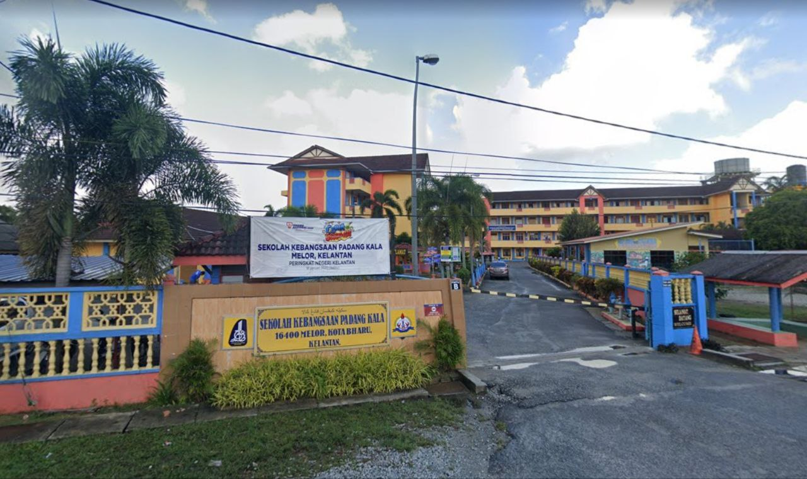
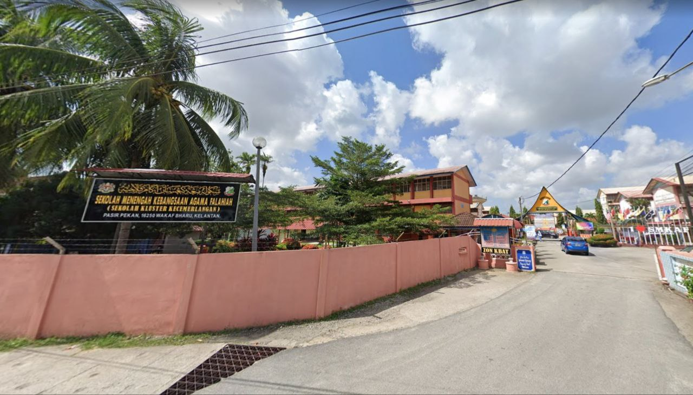
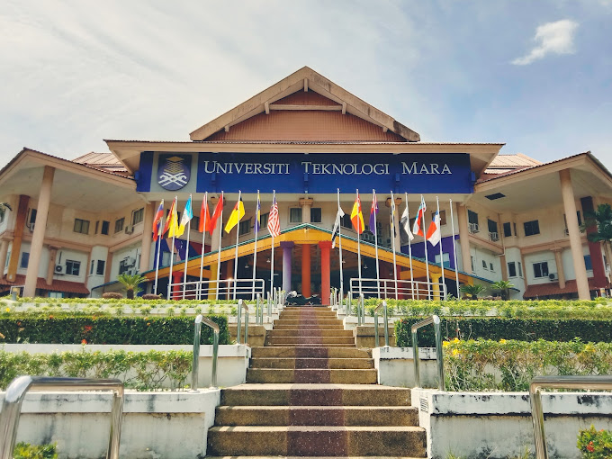
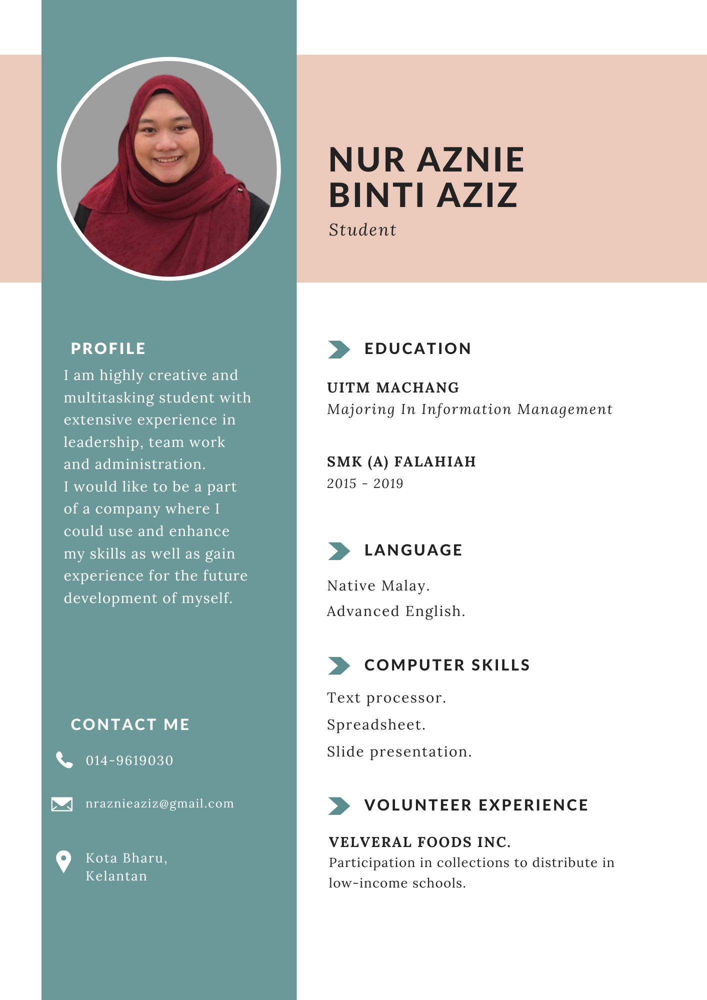

| NAME OF SCHOOL | YEAR | ABOUT |
|---|---|---|
| SEKOLAH KEBANGSAAN PADANG KALA | 2009-2014 | This school could be found in Kota Bharu, Kelantan.I studied in SK Padang Kala for 6 years from 7 years old to 12 years old. |

| NAME OF SCHOOL | YEAR | ABOUT |
|---|---|---|
| SEKOLAH MENENGAH KEBANGSAAN AGAMA FALAHIAH | 2015-2019 | I studied here from the start until the end of high school. In my second and final year of high school, I was an ECNOMY student. I was enjoying learning because the best teacher in this school had transferred. I've also worked as a volunteer, secretary, bureaucrat, and in other capacities. This experience has made me realise that my communication skills and confidence level have improved. I was not afraid to speak in front of a group of people during a talk session or a seminar. |

| NAME OF UNIVERSITY | YEAR | ABOUT |
|---|---|---|
| UiTM MACHANG | 2021-2023 | I am a student pursuing an undergrad diploma in Information Management. I enjoy being here because Kelantan is known as a foodie's paradise. I can get a variety of foods at a low cost. I'm also smitten with the environment. This campus is lush with greenery and can truly help me unwind. If the next generation is unsure about where to further their education, I would recommend this campus. |
